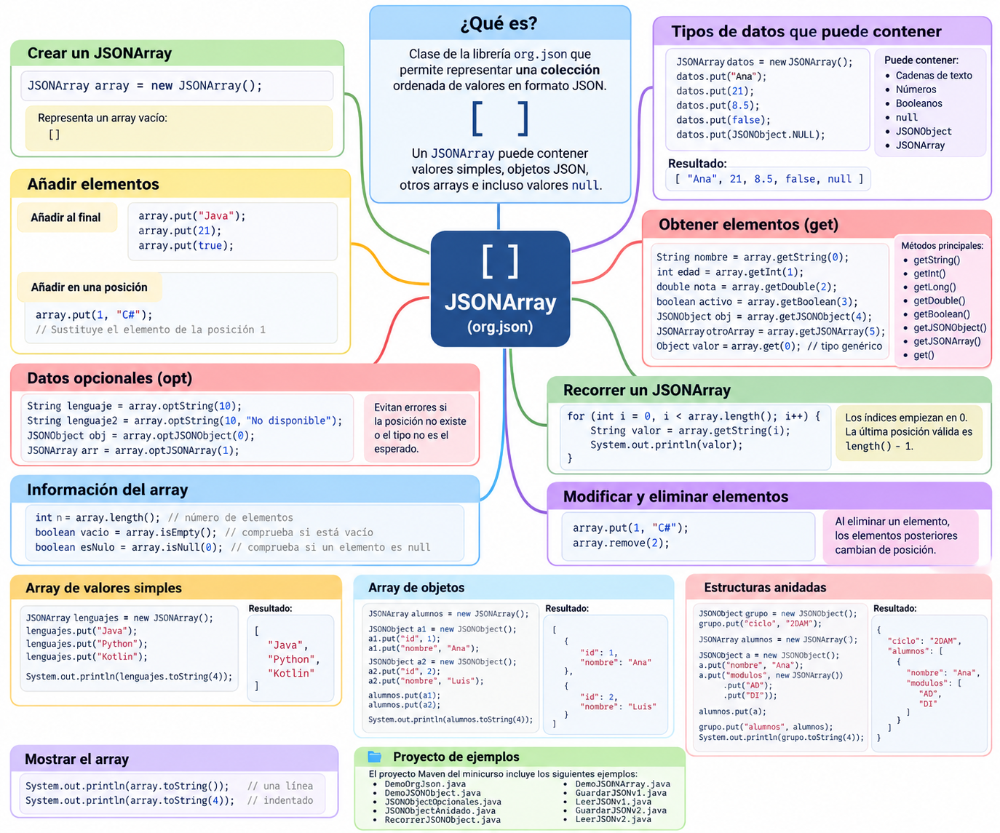

JSONArray¶
1. Introducción¶
JSONArray es otra de las clases principales de la librería org.json.
Mientras que JSONObject representa un objeto formado por pares clave-valor, JSONArray representa una colección ordenada de valores.
En JSON, un array se representa mediante corchetes:
[
"Java",
"Python",
"Kotlin"
]
Con org.json, esta estructura se representa mediante la clase:
JSONArray
Por ejemplo:
JSONArray lenguajes = new JSONArray();
lenguajes.put("Java");
lenguajes.put("Python");
lenguajes.put("Kotlin");
El resultado será:
[
"Java",
"Python",
"Kotlin"
]
JSONArray representa un array JSON
Cuando en un documento JSON encontramos una estructura delimitada por corchetes [ ], estamos ante un array JSON.
Con la librería org.json, este tipo de estructura se representa mediante la clase JSONArray.
2. Mapa general de JSONArray¶
El siguiente esquema resume las principales operaciones que podemos realizar con JSONArray y muestra cómo puede contener tanto valores simples como objetos y otros arrays.

Utiliza el mapa como guía
Utiliza este esquema como referencia durante la lección.
Recuerda especialmente la diferencia fundamental:
text
JSONObject → accedemos mediante claves
JSONArray → accedemos mediante posiciones
3. JSONObject frente a JSONArray¶
Es fundamental distinguir las dos estructuras principales que hemos estudiado.
JSONObject¶
Representa un objeto formado por propiedades:
{
"nombre": "Ana",
"edad": 21
}
Utiliza:
{ }
y cada dato tiene una clave:
"nombre" : "Ana"
↑ ↑
clave valor
Para recuperar un dato utilizamos su clave:
String nombre = objeto.getString("nombre");
JSONArray¶
Representa una colección ordenada:
[
"Java",
"Python",
"Kotlin"
]
Utiliza:
[ ]
y sus elementos se identifican mediante una posición:
posición
↓
[ "Java", "Python", "Kotlin" ]
0 1 2
Por ejemplo:
String lenguaje = array.getString(0);
Podemos resumirlo así:
| Característica | JSONObject |
JSONArray |
|---|---|---|
| Símbolos JSON | { } |
[ ] |
| Organización | Clave-valor | Posiciones |
| Acceso | Mediante clave | Mediante índice |
| Ejemplo | "nombre" |
0, 1, 2 |
| Clase Java | JSONObject |
JSONArray |
Idea clave
En un JSONObject buscamos información mediante una clave.
En un JSONArray accedemos a los elementos mediante su posición.
Creación y operaciones básicas¶
4. Crear un JSONArray¶
Para utilizar JSONArray debemos importar la clase:
import org.json.JSONArray;
Después podemos crear un array vacío:
JSONArray modulos = new JSONArray();
En ese momento representa:
[]
Podemos comprobarlo:
System.out.println(modulos);
5. Añadir elementos con put()¶
El método principal para añadir elementos es:
put(valor)
Por ejemplo:
JSONArray modulos = new JSONArray();
modulos.put("Acceso a Datos");
modulos.put("Desarrollo de Interfaces");
modulos.put("Programación de Servicios");
El resultado será:
[
"Acceso a Datos",
"Desarrollo de Interfaces",
"Programación de Servicios"
]
Cada nuevo elemento se añade al final del array.
Podemos visualizar el proceso:
JSONArray modulos
put("Acceso a Datos")
[0] Acceso a Datos
put("Desarrollo de Interfaces")
[0] Acceso a Datos
[1] Desarrollo de Interfaces
put("Programación de Servicios")
[0] Acceso a Datos
[1] Desarrollo de Interfaces
[2] Programación de Servicios
No indicamos una clave
A diferencia de JSONObject, en un JSONArray normalmente no escribimos:
java
put("clave", valor)
sino simplemente:
java
put(valor)
La posición del elemento queda determinada por el orden en el que se añade.
6. Tipos de datos que puede contener¶
Un JSONArray puede contener distintos tipos de valores JSON.
Por ejemplo:
JSONArray datos = new JSONArray();
datos.put("Ana");
datos.put(21);
datos.put(8.35);
datos.put(false);
datos.put(JSONObject.NULL);
Representaría:
[
"Ana",
21,
8.35,
false,
null
]
Por tanto, un array JSON puede contener:
- cadenas de texto;
- números;
- valores booleanos;
null;- objetos JSON;
- otros arrays JSON.
JSON permite mezclar tipos
JSON permite que un mismo array contenga valores de diferentes tipos.
Sin embargo, en aplicaciones reales suele ser conveniente mantener una estructura coherente.
Por ejemplo, si un array representa alumnos, normalmente todos sus elementos serán objetos que representen alumnos.
7. Mostrar un JSONArray¶
Al igual que con JSONObject, podemos utilizar:
toString()
Por ejemplo:
System.out.println(modulos.toString());
Obtendremos:
["Acceso a Datos","Desarrollo de Interfaces","Programación de Servicios"]
También podemos mostrarlo de forma indentada:
System.out.println(modulos.toString(4));
Obtendremos:
[
"Acceso a Datos",
"Desarrollo de Interfaces",
"Programación de Servicios"
]
El número 4 indica el número de espacios utilizados para la indentación.
Durante el desarrollo
toString(4) resulta muy útil para comprobar visualmente la estructura del JSON que estamos construyendo.
Acceso a los datos¶
8. Acceder a los elementos de un JSONArray¶
Los elementos de un array se identifican mediante su posición.
Las posiciones comienzan en:
0
Por ejemplo:
[
"Java",
"Python",
"Kotlin"
]
tiene las siguientes posiciones:
posición 0 → Java
posición 1 → Python
posición 2 → Kotlin
Podemos acceder a ellas mediante:
String primero = lenguajes.getString(0);
String segundo = lenguajes.getString(1);
String tercero = lenguajes.getString(2);
Los índices comienzan en 0
Si un array tiene 3 elementos, sus posiciones son:
text
0
1
2
Por tanto, la última posición válida siempre será:
text
length() - 1
9. Métodos get...()¶
Al igual que ocurría con JSONObject, existen distintos métodos dependiendo del tipo de dato que queremos recuperar.
Por ejemplo:
JSONArray datos = new JSONArray();
datos.put("Ana");
datos.put(21);
datos.put(8.35);
datos.put(false);
Podemos recuperar:
String nombre = datos.getString(0);
int edad = datos.getInt(1);
double nota = datos.getDouble(2);
boolean repetidor = datos.getBoolean(3);
Algunos de los métodos disponibles son:
| Método | Devuelve |
|---|---|
getString(indice) |
String |
getInt(indice) |
int |
getLong(indice) |
long |
getDouble(indice) |
double |
getBoolean(indice) |
boolean |
getJSONObject(indice) |
JSONObject |
getJSONArray(indice) |
JSONArray |
get(indice) |
Object |
10. Acceso mediante get()¶
Cuando no conocemos de antemano el tipo del elemento podemos utilizar:
Object valor = datos.get(0);
Por ejemplo:
for (int i = 0; i < datos.length(); i++) {
Object valor = datos.get(i);
System.out.println(valor);
}
Esto resulta especialmente útil cuando trabajamos con arrays cuyos elementos pueden ser de diferentes tipos.
Por ejemplo:
JSONArray datos = new JSONArray();
datos.put("Ana");
datos.put(21);
datos.put(true);
for (int i = 0; i < datos.length(); i++) {
Object valor = datos.get(i);
System.out.println(
valor + " -> "
+ valor.getClass().getSimpleName()
);
}
11. Número de elementos: length()¶
Para conocer el número de elementos de un array utilizamos:
length()
Por ejemplo:
JSONArray modulos = new JSONArray();
modulos.put("Acceso a Datos");
modulos.put("Desarrollo de Interfaces");
modulos.put("Programación de Servicios");
System.out.println(modulos.length());
El resultado será:
3
Podemos visualizarlo así:
JSONArray
│
├── [0] Acceso a Datos
├── [1] Desarrollo de Interfaces
└── [2] Programación de Servicios
length() → 3
12. Comprobar si un array está vacío¶
Podemos comprobar si un JSONArray no contiene elementos mediante:
isEmpty()
Por ejemplo:
JSONArray modulos = new JSONArray();
if (modulos.isEmpty()) {
System.out.println("No hay módulos");
}
Después:
modulos.put("Acceso a Datos");
el array ya no estará vacío.
También podríamos realizar la comprobación mediante:
if (modulos.length() == 0) {
System.out.println("No hay elementos");
}
Pero:
isEmpty()
expresa de forma más directa nuestra intención.
Recorrido y modificación¶
13. Recorrer un JSONArray¶
Una de las operaciones más habituales consiste en recorrer todos sus elementos.
Podemos hacerlo mediante un bucle for.
for (int i = 0; i < modulos.length(); i++) {
String modulo = modulos.getString(i);
System.out.println(modulo);
}
Observa la condición:
i < modulos.length()
Si tenemos tres elementos:
length() = 3
sus posiciones serán:
0
1
2
Por eso la última posición válida es:
length() - 1
Error frecuente
No debemos escribir:
java
i <= modulos.length()
porque intentaríamos acceder a una posición que no existe.
Utilizaremos:
java
i < modulos.length()
14. Modificar una posición¶
JSONArray también permite utilizar put() indicando una posición.
Por ejemplo:
JSONArray lenguajes = new JSONArray();
lenguajes.put("Java");
lenguajes.put("Python");
lenguajes.put("Kotlin");
Tenemos:
[
"Java",
"Python",
"Kotlin"
]
Podemos sustituir el elemento de la posición 1:
lenguajes.put(1, "C#");
Ahora tendremos:
[
"Java",
"C#",
"Kotlin"
]
Por tanto:
put(valor)
añade normalmente un elemento al final.
Mientras que:
put(indice, valor)
permite establecer un valor en una posición determinada.
15. Eliminar un elemento¶
Podemos eliminar un elemento utilizando:
remove(indice)
Por ejemplo:
JSONArray lenguajes = new JSONArray();
lenguajes.put("Java");
lenguajes.put("Python");
lenguajes.put("Kotlin");
lenguajes.remove(1);
Antes:
[0] Java
[1] Python
[2] Kotlin
Después:
[0] Java
[1] Kotlin
Los índices cambian
Cuando eliminamos un elemento, los elementos posteriores cambian de posición.
En el ejemplo anterior, Kotlin estaba inicialmente en la posición 2, pero después de eliminar Python pasa a ocupar la posición 1.
Datos opcionales y valores null¶
16. Métodos opt...()¶
Al igual que JSONObject, JSONArray dispone de métodos opt...().
Por ejemplo:
String lenguaje = lenguajes.optString(10);
Si la posición no existe, evitamos realizar un acceso estricto mediante getString().
También podemos indicar un valor alternativo:
String lenguaje =
lenguajes.optString(
10,
"No disponible"
);
Existen métodos como:
optString()
optInt()
optLong()
optDouble()
optBoolean()
optJSONObject()
optJSONArray()
La idea es similar a la estudiada con JSONObject:
get...() → esperamos que exista el dato
opt...() → contemplamos que pueda no existir
Por ejemplo:
JSONArray datos = new JSONArray();
datos.put("Java");
datos.put(21);
String lenguaje =
datos.optString(
0,
"Desconocido"
);
String otroLenguaje =
datos.optString(
10,
"No disponible"
);
System.out.println(lenguaje);
System.out.println(otroLenguaje);
17. Valores null en un JSONArray¶
Podemos almacenar explícitamente un valor nulo JSON mediante:
JSONObject.NULL
Por ejemplo:
JSONArray datos = new JSONArray();
datos.put("Ana");
datos.put(JSONObject.NULL);
datos.put(8.5);
El resultado será:
[
"Ana",
null,
8.5
]
Podemos comprobar si una posición contiene null mediante:
if (datos.isNull(1)) {
System.out.println("El valor es null");
}
null en JSON
JSONObject.NULL representa explícitamente el valor:
json
null
dentro de la estructura JSON.
Arrays de objetos¶
18. JSONArray de JSONObject¶
Hasta ahora hemos utilizado principalmente arrays de valores simples.
Sin embargo, una de las estructuras más habituales en JSON es un array de objetos.
Supongamos que queremos representar varios alumnos:
[
{
"id": 1,
"nombre": "Ana",
"nota": 8.5
},
{
"id": 2,
"nombre": "Luis",
"nota": 7.2
},
{
"id": 3,
"nombre": "Marta",
"nota": 9.1
}
]
La estructura principal es:
JSONArray
│
├── [0] JSONObject
│ ├── id
│ ├── nombre
│ └── nota
│
├── [1] JSONObject
│ ├── id
│ ├── nombre
│ └── nota
│
└── [2] JSONObject
├── id
├── nombre
└── nota
Este tipo de estructura será muy habitual cuando trabajemos con colecciones de información.
19. Construir un array de objetos¶
Primero creamos los objetos:
JSONObject alumno1 = new JSONObject();
alumno1.put("id", 1);
alumno1.put("nombre", "Ana");
alumno1.put("nota", 8.5);
Creamos otro:
JSONObject alumno2 = new JSONObject();
alumno2.put("id", 2);
alumno2.put("nombre", "Luis");
alumno2.put("nota", 7.2);
Y otro:
JSONObject alumno3 = new JSONObject();
alumno3.put("id", 3);
alumno3.put("nombre", "Marta");
alumno3.put("nota", 9.1);
Después creamos el array:
JSONArray alumnos = new JSONArray();
y añadimos los objetos:
alumnos.put(alumno1);
alumnos.put(alumno2);
alumnos.put(alumno3);
Finalmente:
System.out.println(alumnos.toString(4));
mostrará:
[
{
"id": 1,
"nombre": "Ana",
"nota": 8.5
},
{
"id": 2,
"nombre": "Luis",
"nota": 7.2
},
{
"id": 3,
"nombre": "Marta",
"nota": 9.1
}
]
20. Recuperar un JSONObject del array¶
Si sabemos que los elementos del array son objetos, podemos utilizar:
getJSONObject(indice)
Por ejemplo:
JSONObject primerAlumno =
alumnos.getJSONObject(0);
Después podemos acceder a sus propiedades:
String nombre =
primerAlumno.getString("nombre");
double nota =
primerAlumno.getDouble("nota");
También podemos encadenar las operaciones:
String nombre =
alumnos.getJSONObject(0)
.getString("nombre");
En este caso:
alumnos
│
│ getJSONObject(0)
▼
JSONObject
│
│ getString("nombre")
▼
"Ana"
21. Recorrer un array de objetos¶
Una operación muy habitual consiste en recorrer una colección de objetos.
for (int i = 0; i < alumnos.length(); i++) {
JSONObject alumno =
alumnos.getJSONObject(i);
int id =
alumno.getInt("id");
String nombre =
alumno.getString("nombre");
double nota =
alumno.getDouble("nota");
System.out.println(
id + " - "
+ nombre
+ " - "
+ nota
);
}
El proceso puede visualizarse así:
JSONArray alumnos
│
▼
posición i
│
▼
getJSONObject(i)
│
▼
JSONObject alumno
│
├── getInt("id")
├── getString("nombre")
└── getDouble("nota")
Combinación de JSONObject y JSONArray¶
22. JSONArray dentro de JSONObject¶
Ya vimos un ejemplo de este caso al estudiar JSONObject.
Supongamos:
{
"id": 1024,
"nombre": "Ana",
"modulos": [
"Acceso a Datos",
"Desarrollo de Interfaces",
"Programación de Servicios"
]
}
La estructura es:
JSONObject alumno
│
├── id
├── nombre
│
└── modulos
│
└── JSONArray
├── [0]
├── [1]
└── [2]
En Java:
JSONObject alumno = new JSONObject();
alumno.put("id", 1024);
alumno.put("nombre", "Ana");
JSONArray modulos = new JSONArray();
modulos.put("Acceso a Datos");
modulos.put("Desarrollo de Interfaces");
modulos.put("Programación de Servicios");
alumno.put("modulos", modulos);
23. Recuperar el JSONArray contenido en un JSONObject¶
Podemos recuperar el array mediante:
JSONArray modulos =
alumno.getJSONArray("modulos");
Y recorrerlo:
for (int i = 0; i < modulos.length(); i++) {
System.out.println(
modulos.getString(i)
);
}
Observa la secuencia:
JSONObject
│
│ getJSONArray("modulos")
▼
JSONArray
│
│ getString(i)
▼
elemento
24. Arrays dentro de arrays¶
Un JSONArray también puede contener otros arrays.
Por ejemplo:
[
["Java", "Kotlin"],
["Python", "JavaScript"],
["HTML", "CSS"]
]
Podemos construirlo así:
JSONArray backend = new JSONArray();
backend.put("Java");
backend.put("Kotlin");
JSONArray scripting = new JSONArray();
scripting.put("Python");
scripting.put("JavaScript");
JSONArray frontend = new JSONArray();
frontend.put("HTML");
frontend.put("CSS");
JSONArray tecnologias = new JSONArray();
tecnologias.put(backend);
tecnologias.put(scripting);
tecnologias.put(frontend);
La estructura será:
JSONArray tecnologias
│
├── [0] JSONArray
│ ├── Java
│ └── Kotlin
│
├── [1] JSONArray
│ ├── Python
│ └── JavaScript
│
└── [2] JSONArray
├── HTML
└── CSS
Para recuperar el primer array:
JSONArray primerGrupo =
tecnologias.getJSONArray(0);
Y su primer elemento:
String lenguaje =
primerGrupo.getString(0);
También podríamos acceder directamente:
String lenguaje =
tecnologias
.getJSONArray(0)
.getString(0);
Estructuras JSON más completas¶
25. Ejemplo: grupo de alumnos¶
Vamos a construir una estructura algo más próxima a un caso real.
Queremos representar:
{
"ciclo": "DAM",
"curso": 2,
"alumnos": [
{
"id": 1,
"nombre": "Ana",
"modulos": [
"Acceso a Datos",
"Desarrollo de Interfaces"
]
},
{
"id": 2,
"nombre": "Luis",
"modulos": [
"Acceso a Datos",
"Programación de Servicios"
]
}
]
}
Observa que tenemos varios niveles:
JSONObject grupo
│
├── ciclo
├── curso
│
└── alumnos ───────────── JSONArray
│
├── [0] ────────── JSONObject
│ ├── id
│ ├── nombre
│ │
│ └── modulos ── JSONArray
│
└── [1] ────────── JSONObject
├── id
├── nombre
│
└── modulos ── JSONArray
26. Construcción paso a paso¶
Paso 1. Crear los módulos de Ana¶
JSONArray modulosAna = new JSONArray();
modulosAna.put("Acceso a Datos");
modulosAna.put("Desarrollo de Interfaces");
Paso 2. Crear a Ana¶
JSONObject ana = new JSONObject();
ana.put("id", 1);
ana.put("nombre", "Ana");
ana.put("modulos", modulosAna);
En este momento tenemos:
{
"id": 1,
"nombre": "Ana",
"modulos": [
"Acceso a Datos",
"Desarrollo de Interfaces"
]
}
Paso 3. Crear los módulos de Luis¶
JSONArray modulosLuis = new JSONArray();
modulosLuis.put("Acceso a Datos");
modulosLuis.put("Programación de Servicios");
Paso 4. Crear a Luis¶
JSONObject luis = new JSONObject();
luis.put("id", 2);
luis.put("nombre", "Luis");
luis.put("modulos", modulosLuis);
Paso 5. Crear el array de alumnos¶
JSONArray alumnos = new JSONArray();
alumnos.put(ana);
alumnos.put(luis);
Ahora tenemos:
[
{
"id": 1,
"nombre": "Ana",
"modulos": [
"Acceso a Datos",
"Desarrollo de Interfaces"
]
},
{
"id": 2,
"nombre": "Luis",
"modulos": [
"Acceso a Datos",
"Programación de Servicios"
]
}
]
Paso 6. Crear el objeto principal¶
JSONObject grupo = new JSONObject();
grupo.put("ciclo", "DAM");
grupo.put("curso", 2);
grupo.put("alumnos", alumnos);
Finalmente:
System.out.println(grupo.toString(4));
27. Recorrer una estructura anidada¶
Supongamos que queremos mostrar todos los alumnos y sus módulos.
Primero obtenemos el array de alumnos:
JSONArray alumnos =
grupo.getJSONArray("alumnos");
Después recorremos los alumnos:
for (int i = 0; i < alumnos.length(); i++) {
JSONObject alumno =
alumnos.getJSONObject(i);
System.out.println(
"Alumno: "
+ alumno.getString("nombre")
);
JSONArray modulos =
alumno.getJSONArray("modulos");
for (int j = 0; j < modulos.length(); j++) {
System.out.println(
" - "
+ modulos.getString(j)
);
}
}
La salida será similar a:
Alumno: Ana
- Acceso a Datos
- Desarrollo de Interfaces
Alumno: Luis
- Acceso a Datos
- Programación de Servicios
Este ejemplo muestra una idea muy importante:
JSONObject
↓
JSONArray alumnos
↓
JSONObject alumno
↓
JSONArray modulos
↓
String
Leer JSON consiste en recorrer su estructura
Cuando trabajamos con documentos JSON complejos debemos identificar qué tipo de estructura tenemos en cada nivel:
- si encontramos
{ }→JSONObject; - si encontramos
[ ]→JSONArray; - si encontramos un valor simple → utilizaremos el método
get...()adecuado.
Ejemplos del proyecto Maven¶
28. DemoJSONArray.java¶
En el proyecto Maven del minicurso utilizaremos:
DemoJSONArray.java
Este ejemplo reúne las operaciones fundamentales de JSONArray.
package com.example;
import org.json.JSONArray;
import org.json.JSONObject;
public class DemoJSONArray {
public static void main(String[] args) {
// ==========================================
// 1. ARRAY DE VALORES SIMPLES
// ==========================================
JSONArray modulos = new JSONArray();
modulos.put("Acceso a Datos");
modulos.put("Desarrollo de Interfaces");
modulos.put("Programación de Servicios");
System.out.println("ARRAY DE MÓDULOS");
System.out.println(modulos.toString(4));
// ==========================================
// 2. ACCEDER A LOS ELEMENTOS
// ==========================================
System.out.println("\nPrimer módulo:");
System.out.println(
modulos.getString(0)
);
// ==========================================
// 3. RECORRER EL ARRAY
// ==========================================
System.out.println("\nLISTADO DE MÓDULOS");
for (int i = 0; i < modulos.length(); i++) {
System.out.println(
i + " -> "
+ modulos.getString(i)
);
}
// ==========================================
// 4. CREAR OBJETOS
// ==========================================
JSONObject alumno1 = new JSONObject();
alumno1.put("id", 1);
alumno1.put("nombre", "Ana");
alumno1.put("nota", 8.5);
JSONObject alumno2 = new JSONObject();
alumno2.put("id", 2);
alumno2.put("nombre", "Luis");
alumno2.put("nota", 7.2);
JSONObject alumno3 = new JSONObject();
alumno3.put("id", 3);
alumno3.put("nombre", "Marta");
alumno3.put("nota", 9.1);
// ==========================================
// 5. ARRAY DE OBJETOS
// ==========================================
JSONArray alumnos = new JSONArray();
alumnos.put(alumno1);
alumnos.put(alumno2);
alumnos.put(alumno3);
System.out.println("\nARRAY DE ALUMNOS");
System.out.println(
alumnos.toString(4)
);
// ==========================================
// 6. RECORRER ARRAY DE OBJETOS
// ==========================================
System.out.println("\nALUMNOS");
for (int i = 0; i < alumnos.length(); i++) {
JSONObject alumno =
alumnos.getJSONObject(i);
System.out.println(
alumno.getInt("id")
+ " - "
+ alumno.getString("nombre")
+ " - Nota: "
+ alumno.getDouble("nota")
);
}
// ==========================================
// 7. DATOS OPCIONALES
// ==========================================
JSONObject alumno =
alumnos.getJSONObject(0);
String email =
alumno.optString(
"email",
"No disponible"
);
System.out.println(
"\nEmail de "
+ alumno.getString("nombre")
+ ": "
+ email
);
// ==========================================
// 8. INFORMACIÓN DEL ARRAY
// ==========================================
System.out.println(
"\nNúmero de alumnos: "
+ alumnos.length()
);
System.out.println(
"¿Está vacío?: "
+ alumnos.isEmpty()
);
}
}
29. JSONArrayAnidado.java¶
Para practicar estructuras más completas utilizaremos también:
JSONArrayAnidado.java
En este ejemplo combinamos:
JSONObject
↓
JSONArray
↓
JSONObject
↓
JSONArray
Código:
package com.example;
import org.json.JSONArray;
import org.json.JSONObject;
public class JSONArrayAnidado {
public static void main(String[] args) {
// ==========================================
// 1. MÓDULOS DE ANA
// ==========================================
JSONArray modulosAna = new JSONArray();
modulosAna.put("Acceso a Datos");
modulosAna.put("Desarrollo de Interfaces");
// ==========================================
// 2. ALUMNA ANA
// ==========================================
JSONObject ana = new JSONObject();
ana.put("id", 1);
ana.put("nombre", "Ana");
ana.put("modulos", modulosAna);
// ==========================================
// 3. MÓDULOS DE LUIS
// ==========================================
JSONArray modulosLuis = new JSONArray();
modulosLuis.put("Acceso a Datos");
modulosLuis.put("Programación de Servicios");
// ==========================================
// 4. ALUMNO LUIS
// ==========================================
JSONObject luis = new JSONObject();
luis.put("id", 2);
luis.put("nombre", "Luis");
luis.put("modulos", modulosLuis);
// ==========================================
// 5. ARRAY DE ALUMNOS
// ==========================================
JSONArray alumnos = new JSONArray();
alumnos.put(ana);
alumnos.put(luis);
// ==========================================
// 6. OBJETO PRINCIPAL
// ==========================================
JSONObject grupo = new JSONObject();
grupo.put("ciclo", "DAM");
grupo.put("curso", 2);
grupo.put("alumnos", alumnos);
// ==========================================
// 7. MOSTRAR JSON COMPLETO
// ==========================================
System.out.println("JSON COMPLETO");
System.out.println(
grupo.toString(4)
);
// ==========================================
// 8. RECORRER LA ESTRUCTURA
// ==========================================
JSONArray listaAlumnos =
grupo.getJSONArray("alumnos");
System.out.println("\nALUMNOS Y MÓDULOS");
for (int i = 0;
i < listaAlumnos.length();
i++) {
JSONObject alumno =
listaAlumnos.getJSONObject(i);
System.out.println(
"\nAlumno: "
+ alumno.getString("nombre")
);
JSONArray modulos =
alumno.getJSONArray("modulos");
for (int j = 0;
j < modulos.length();
j++) {
System.out.println(
" - "
+ modulos.getString(j)
);
}
}
}
}
Dos ejemplos con objetivos diferentes
DemoJSONArray.java está pensado para aprender las operaciones fundamentales de la clase.
JSONArrayAnidado.java permite practicar la construcción y recorrido de estructuras JSON con varios niveles.
Métodos principales¶
30. Resumen de métodos de JSONArray¶
| Necesitamos... | Método |
|---|---|
| Crear un array | new JSONArray() |
| Añadir al final | put(valor) |
| Establecer un valor en una posición | put(indice, valor) |
| Obtener un elemento genérico | get(indice) |
| Obtener un texto | getString(indice) |
| Obtener un entero | getInt(indice) |
Obtener un long |
getLong(indice) |
| Obtener un decimal | getDouble(indice) |
| Obtener un booleano | getBoolean(indice) |
| Obtener un objeto | getJSONObject(indice) |
| Obtener otro array | getJSONArray(indice) |
| Obtener un dato opcional | opt...() |
Comprobar null |
isNull(indice) |
| Eliminar un elemento | remove(indice) |
| Número de elementos | length() |
| Comprobar si está vacío | isEmpty() |
| Convertir a texto | toString() |
| Mostrar indentado | toString(4) |
Errores frecuentes¶
31. Confundir JSONObject y JSONArray¶
Si tenemos:
{
"nombre": "Ana"
}
utilizamos:
JSONObject
Si tenemos:
[
"Ana",
"Luis",
"Marta"
]
utilizamos:
JSONArray
Recuerda:
{ } → JSONObject
[ ] → JSONArray
32. Intentar acceder mediante una clave¶
Un JSONArray no utiliza claves como:
array.getString("nombre");
Accedemos mediante posiciones:
array.getString(0);
Las claves pertenecen a los objetos JSONObject.
33. Olvidar que los índices empiezan en cero¶
Para:
[
"Java",
"Python",
"Kotlin"
]
las posiciones son:
Java → 0
Python → 1
Kotlin → 2
No existe la posición 3.
34. Recorrer incorrectamente el array¶
Incorrecto:
for (int i = 0; i <= array.length(); i++) {
Correcto:
for (int i = 0; i < array.length(); i++) {
La razón es:
length() = número de elementos
última posición = length() - 1
35. Utilizar el método de acceso incorrecto¶
Si tenemos:
[
{
"nombre": "Ana"
}
]
el elemento 0 no es un String.
Es un objeto JSON.
Por tanto, no utilizaríamos:
alumnos.getString(0);
sino:
JSONObject alumno =
alumnos.getJSONObject(0);
y después:
String nombre =
alumno.getString("nombre");
36. Confundir el nivel de la estructura¶
Supongamos:
{
"alumnos": [
{
"nombre": "Ana"
}
]
}
No podemos acceder directamente mediante:
json.getString("nombre");
porque nombre no está en el objeto raíz.
Debemos recorrer los niveles:
JSONArray alumnos =
json.getJSONArray("alumnos");
JSONObject alumno =
alumnos.getJSONObject(0);
String nombre =
alumno.getString("nombre");
Es decir:
JSONObject raíz
│
│ getJSONArray("alumnos")
▼
JSONArray
│
│ getJSONObject(0)
▼
JSONObject alumno
│
│ getString("nombre")
▼
"Ana"
Lee la estructura antes de programar
Antes de escribir el código Java, observa el documento JSON e identifica:
text
{ } → JSONObject
[ ] → JSONArray
Después recorre la estructura nivel a nivel.
Resumen¶
37. Esquema general de JSONArray¶
JSONArray
│
├── Crear
│ └── new JSONArray()
│
├── Añadir
│ ├── put(valor)
│ └── put(indice, valor)
│
├── Consultar
│ ├── get()
│ ├── getString()
│ ├── getInt()
│ ├── getDouble()
│ ├── getBoolean()
│ ├── getJSONObject()
│ └── getJSONArray()
│
├── Datos opcionales
│ └── opt...()
│
├── Comprobar
│ ├── isNull()
│ ├── length()
│ └── isEmpty()
│
├── Eliminar
│ └── remove()
│
├── Recorrer
│ └── for
│
├── Puede contener
│ ├── valores simples
│ ├── JSONObject
│ └── JSONArray
│
└── Mostrar
├── toString()
└── toString(4)
38. JSONObject + JSONArray¶
Las dos clases se complementan:
JSON
│
┌─────────┴─────────┐
│ │
▼ ▼
JSONObject JSONArray
│ │
{ ... } [ ... ]
│ │
clave-valor posiciones
│ │
└─────────┬─────────┘
│
▼
pueden contenerse
entre sí
Por ejemplo:
{
"grupo": "2DAM",
"alumnos": [
{
"id": 1,
"nombre": "Ana"
},
{
"id": 2,
"nombre": "Luis"
}
]
}
se interpreta como:
JSONObject
│
├── grupo → String
│
└── alumnos → JSONArray
│
├── JSONObject
│ ├── id
│ └── nombre
│
└── JSONObject
├── id
└── nombre
Idea clave
Para trabajar correctamente con un documento JSON debemos ser capaces de reconocer su estructura.
Cada vez que encontremos:
text
{ } → JSONObject
[ ] → JSONArray
A partir de ahí podremos decidir qué método necesitamos para avanzar por cada nivel del documento.
39. ¿Qué debemos saber antes de continuar?¶
Antes de avanzar a la lectura y escritura de ficheros JSON deberíamos ser capaces de:
- crear un
JSONArray; - añadir elementos mediante
put(); - recuperar valores mediante
get...(); - utilizar
length()eisEmpty(); - recorrer un array;
- trabajar con datos opcionales mediante
opt...(); - distinguir
JSONObjectyJSONArray; - crear arrays de objetos;
- introducir un
JSONArraydentro de unJSONObject; - introducir objetos dentro de un
JSONArray; - trabajar con estructuras JSON anidadas;
- recorrer una estructura combinando
JSONObjectyJSONArray.
Una vez dominadas estas operaciones estaremos preparados para el siguiente paso:
JSONObject + JSONArray
↓
convertir a texto JSON
↓
guardar en un fichero
↓
recuperar el contenido
↓
JSONTokener
↓
reconstruir JSONObject / JSONArray
40. Ejemplos incluidos en el proyecto¶
Los ejemplos correspondientes a JSONArray están incluidos en el proyecto Maven descargable de org.json:
| Ejemplo | Contenido que practica |
|---|---|
DemoJSONArray.java |
Creación de un JSONArray, put(), acceso por posición, métodos get...(), length(), isEmpty(), modificación, eliminación y recorrido |
JSONArrayAnidado.java |
Estructuras JSON más complejas combinando JSONObject y JSONArray en varios niveles |
Proyecto de ejemplos
Estos ejemplos forman parte del proyecto Maven común de org.json.
No es necesario descargar un proyecto diferente para cada apartado. El proyecto completo está disponible desde la página de Introducción a org.json y contiene todos los ejemplos que iremos utilizando durante el tema.